ВЫХОДНОЙ ВАЛ > ПОВТОРНАЯ СБОРКА |
| 1. УСТАНОВИТЕ СКОЛЬЗЯЩУЮ МУФТУ ТРАНСМИССИИ № 2 |
| 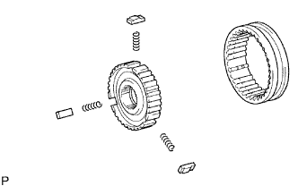 |
Установите 3 пружины сухарей механизма синхронизации № 2 и 3 сухаря механизма синхронизации на ступицу скользящей муфты № 2.
Нанесите трансмиссионное масло на скользящую часть скользящей муфты № 2 и установите ее на ступицу скользящей муфты № 2.
| 2. УСТАНОВИТЕ ИГОЛЬЧАТЫЙ РОЛИКОВЫЙ ПОДШИПНИК ШЕСТЕРНИ 3-Й ПЕРЕДАЧИ |
| 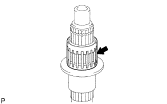 |
Нанесите на игольчатый роликовый подшипник трансмиссионное масло и установите его на выходной вал.
| 3. УСТАНОВИТЕ ШЕСТЕРНЮ 3-Й ПЕРЕДАЧИ |
| 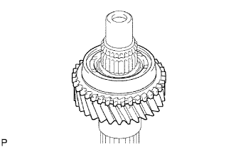 |
Нанесите трансмиссионное масло на шестерню 3-й передачи и установите ее на выходной вал.
| 4. УСТАНОВИТЕ БЛОКИРУЮЩЕЕ КОЛЬЦО СИНХРОНИЗАТОРА № 2 (для шестерни 3-й передачи) |
| 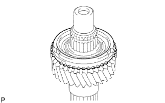 |
Смажьте блокирующее кольцо синхронизатора № 2 трансмиссионным маслом и установите его на шестерню 3-й передачи.
| 5. УСТАНОВИТЕ СТУПИЦУ СКОЛЬЗЯЩЕЙ МУФТЫ ТРАНСМИССИИ № 2 |
| 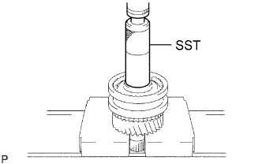 |
С помощью SST и пресса установите ступицу скользящей муфты № 2 на выходной вал.
Подберите такое пружинное стопорное кольцо, при котором обеспечивается номинальный зазор между ним и ступицей скользящей муфты № 2.
| Метка | Толщина |
| А | 1,80-1,85 мм (0,0709-0,0728 дюйма) |
| B | 1,85-1,90 мм (0,0728-0,0748 дюйма) |
| C | 1,90-1,95 мм (0,0748-0,0768 дюйма) |
| D | 1,95-2,00 мм (0,0768-0,0787 дюйма) |
| E | 2,00-2,05 мм (0,0787-0,0807 дюйма) |
| F | 2,05-2,10 мм (0,0807-0,0827 дюйма) |
| G | 2,10-2,15 мм (0,0827-0,0846 дюйма) |
| 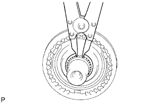 |
С помощью съемника стопорных колец установите пружинное стопорное кольцо.
| 6. УСТАНОВИТЕ ИГОЛЬЧАТЫЙ РОЛИКОВЫЙ ПОДШИПНИК ШЕСТЕРНИ 2-Й ПЕРЕДАЧИ |
| 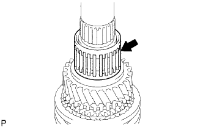 |
Нанесите на игольчатый роликовый подшипник трансмиссионное масло и установите его на выходной вал.
| 7. УСТАНОВИТЕ ШЕСТЕРНЮ 2-Й ПЕРЕДАЧИ |
| 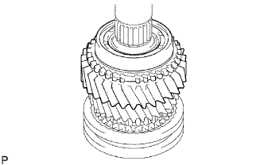 |
Смажьте шестерню 2-й передачи трансмиссионным маслом и установите ее на выходной вал.
| 8. УСТАНОВИТЕ НАБОР БЛОКИРУЮЩИХ КОЛЕЦ СИНХРОНИЗАТОРА № 1 (для шестерни 2-й передачи) |
| 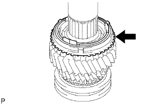 |
Смажьте набор блокирующих колец синхронизатора № 1 трансмиссионным маслом и установите его на шестерню 2-й передачи.
| 9. УСТАНОВИТЕ ШЕСТЕРНЮ ЗАДНЕГО ХОДА |
| 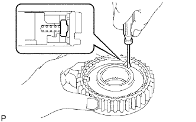 |
С помощью отвертки установите 3 пружины сухарей механизма синхронизации и 3 сухаря механизма синхронизации № 1 в ступицу скользящей муфты № 1.
Смажьте шестерню заднего хода трансмиссионным маслом и установите на ступицу скользящей муфты № 1.
| 10. УСТАНОВИТЕ СТУПИЦУ СКОЛЬЗЯЩЕЙ МУФТЫ ТРАНСМИССИИ № 1 |
| 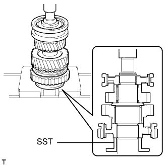 |
С помощью SST и пресса установите ступицу скользящей муфты № 1 на выходной вал.
Подберите такое пружинное стопорное кольцо, при котором обеспечивается номинальный осевой зазор между ним и ступицей скользящей муфты № 1.
| Метка | Толщина |
| А | 2,30-2,35 мм (0,0906-0,0925 дюйма) |
| B | 2,35-2,40 мм (0,0925-0,0945 дюйма) |
| C | 2,40-2,45 мм (0,0945-0,0965 дюйма) |
| D | 2,45-2,50 мм (0,0965-0,0984 дюйма) |
| E | 2,50-2,55 мм (0,0984-0,1004 дюйма) |
| F | 2,55-2,60 мм (0,1004-0,1024 дюйма) |
| G | 2,60-2,65 мм (0,1024-0,1043 дюйма) |
| 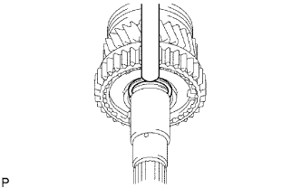 |
С помощью латунного стержня и молотка установите пружинное стопорное кольцо.
| 11. УСТАНОВИТЕ РАСПОРНУЮ ВТУЛКУ ПОДШИПНИКА ШЕСТЕРНИ 1-Й ПЕРЕДАЧИ |
| 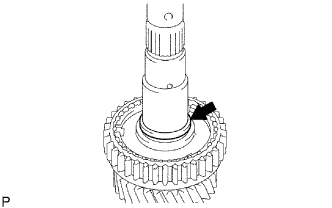 |
Смажьте распорную втулку подшипника трансмиссионным маслом и установите ее на выходной вал.
| 12. УСТАНОВИТЕ ИГОЛЬЧАТЫЙ РОЛИКОВЫЙ ПОДШИПНИК ШЕСТЕРНИ 1-Й ПЕРЕДАЧИ |
| 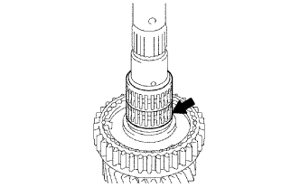 |
Нанесите на игольчатый роликовый подшипник трансмиссионное масло и установите его на выходной вал.
| 13. УСТАНОВИТЕ ШТИФТ УПОРНОЙ ШАЙБЫ ШЕСТЕРНИ 1-Й ПЕРЕДАЧИ |
| 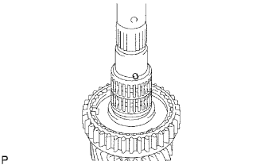 |
Установите штифт упорной шайбы в выходной вал.
| 14. УСТАНОВИТЕ НАБОР БЛОКИРУЮЩИХ КОЛЕЦ СИНХРОНИЗАТОРА № 1 (для шестерни 1-й передачи) |
| 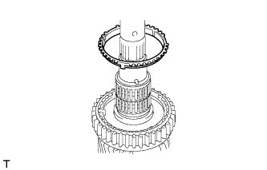 |
Смажьте набор блокирующих колец синхронизатора № 1 трансмиссионным маслом и установите его на выходной вал.
| 15. УСТАНОВИТЕ ШЕСТЕРНЮ 1-Й ПЕРЕДАЧИ |
| 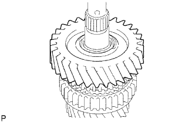 |
Смажьте шестерню 1-й передачи трансмиссионным маслом и установите ее на выходной вал.
| 16. УСТАНОВИТЕ УПОРНУЮ ШАЙБУ ШЕСТЕРНИ 1-Й ПЕРЕДАЧИ |
| 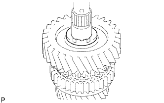 |
Смажьте упорную шайбу трансмиссионным маслом и установите ее на выходной вал.
| 17. УСТАНОВИТЕ ЦЕНТРАЛЬНЫЙ ПОДШИПНИК ВЫХОДНОГО ВАЛА |
| 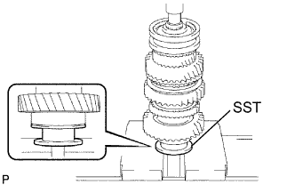 |
С помощью SST и пресса установите новый центральный подшипник на выходной вал.
| 18. УСТАНОВИТЕ ШЕСТЕРНЮ 5-Й ПЕРЕДАЧИ |
| 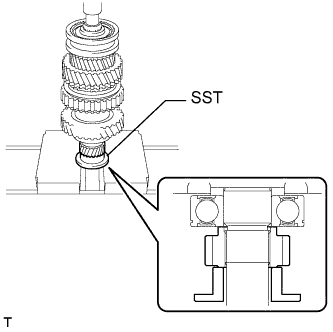 |
С помощью SST и пресса установите шестерню 5-й передачи на выходной вал.
| 19. ПРОВЕРЬТЕ ОСЕВОЙ ЗАЗОР ШЕСТЕРНИ 1-Й ПЕРЕДАЧИ |
| 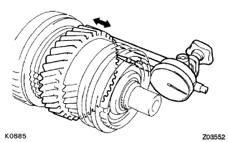 |
С помощью индикатора часового типа измерьте осевой зазор.
| 20. ПРОВЕРЬТЕ ОСЕВОЙ ЗАЗОР ШЕСТЕРНИ 2-Й ПЕРЕДАЧИ |
С помощью индикатора часового типа измерьте осевой зазор.
| 21. ПРОВЕРЬТЕ ОСЕВОЙ ЗАЗОР ШЕСТЕРНИ 3-Й ПЕРЕДАЧИ |
| 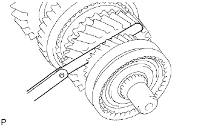 |
С помощью комплекта плоских щупов измерьте осевой зазор.
| 22. ПРОВЕРЬТЕ РАДИАЛЬНЫЙ ЗАЗОР ШЕСТЕРНИ 1-Й ПЕРЕДАЧИ |
| 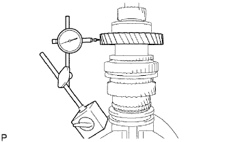 |
С помощью индикатора часового типа измерьте радиальный зазор.
| 23. ПРОВЕРЬТЕ РАДИАЛЬНЫЙ ЗАЗОР ШЕСТЕРНИ 2-Й ПЕРЕДАЧИ |
| 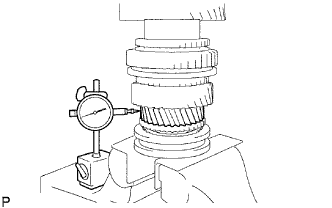 |
С помощью индикатора часового типа измерьте радиальный зазор.
| 24. ПРОВЕРЬТЕ РАДИАЛЬНЫЙ ЗАЗОР ШЕСТЕРНИ 3-Й ПЕРЕДАЧИ |
| 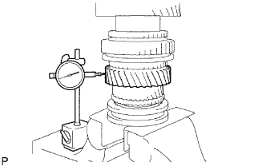 |
С помощью индикатора часового типа измерьте радиальный зазор.